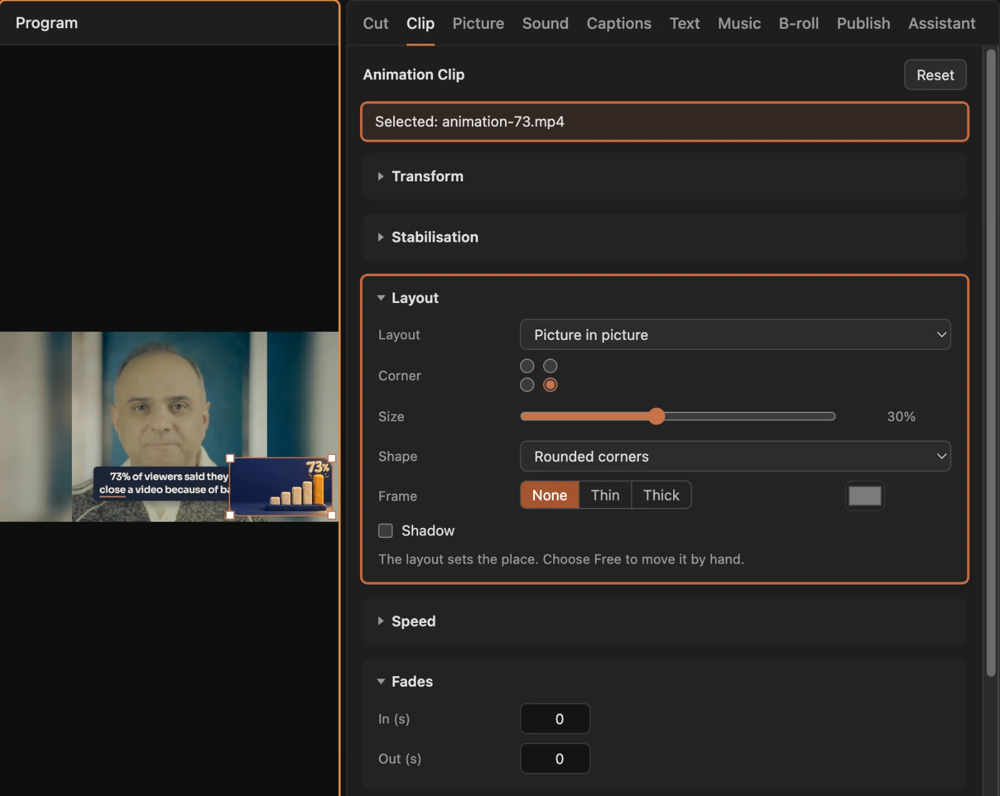

Clip
The Clip tab changes what you have selected: one clip, a piece of the recording, or the whole recording. Its first line says which.

What is selected
- Selected: the recording. The settings change the whole recording.
- Selected: a piece of the recording. The settings change this piece only.
- Or a clip by name, such as an animation, a shot or a title. For a title, Go to Text opens its words and style.
With nothing selected, the controls change the whole recording.
The sections
The tab shows the sections that fit what is selected:
- Transform: Opacity (%), Scale (%), position, Rotation (°) and crop from each side. Reset puts it back. The same can be done by dragging in the Program viewer.
- Layout: Free, Picture in picture or Split screen, to put two clips together.
- Speed (Piece speed for a piece of the recording): the rate, and for a shot the kind of Slow motion: Repeat frames, Blend frames or Make new frames (slower export).
- Fades: fade in and out, in seconds.
- Motion (keyframes): size and position over time, with ready moves such as Slow Push In and Pan Left. Motion is off while a layout other than Free is chosen.
- Colour: AI picture, looks, manual correction, curves, wheels, LUT and scopes (Colour).
- Green screen (Green screen) and Blur faces and areas (Blur).
- Volume curve: points that raise or lower the sound over time. Add Point at Playhead adds one.
- Presets: Save Look as Preset… keeps the clip's settings to apply to another.
Other switches
- Steady shaky footage (applied on export) for a shot, and Steady the shaky recording for the recording, run on this computer.
- Mute the clip's sound: the picture stays, its sound is heard neither while playing nor in the export.
- For music: Last to the End of the Video. Short music loops with smooth seams, long music is cut; either way it fades out at the end.